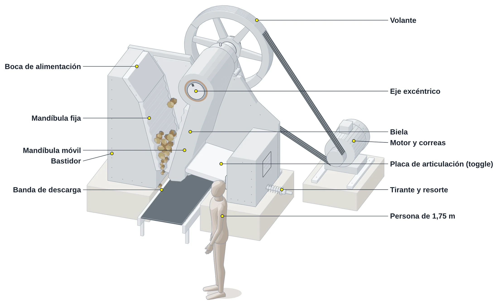
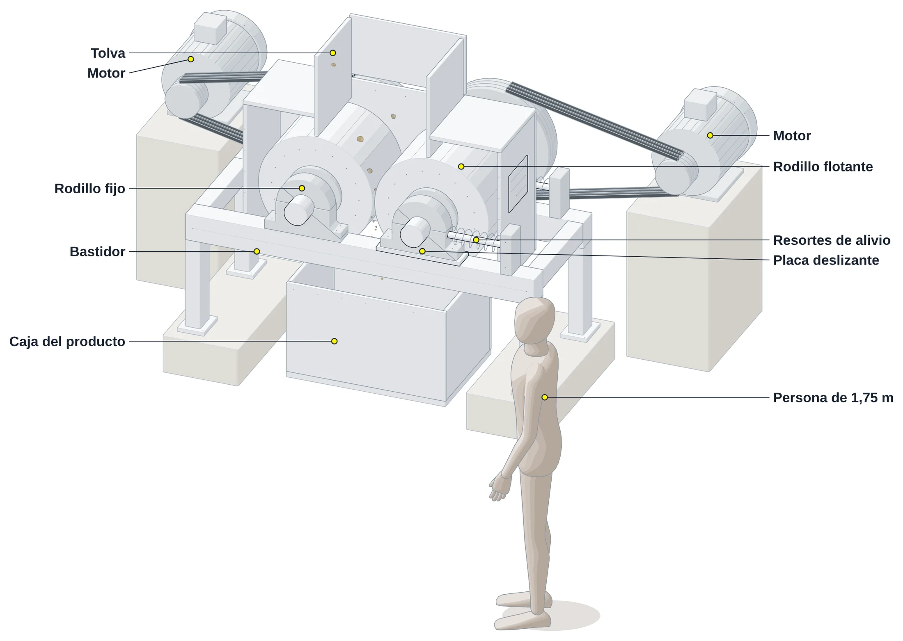
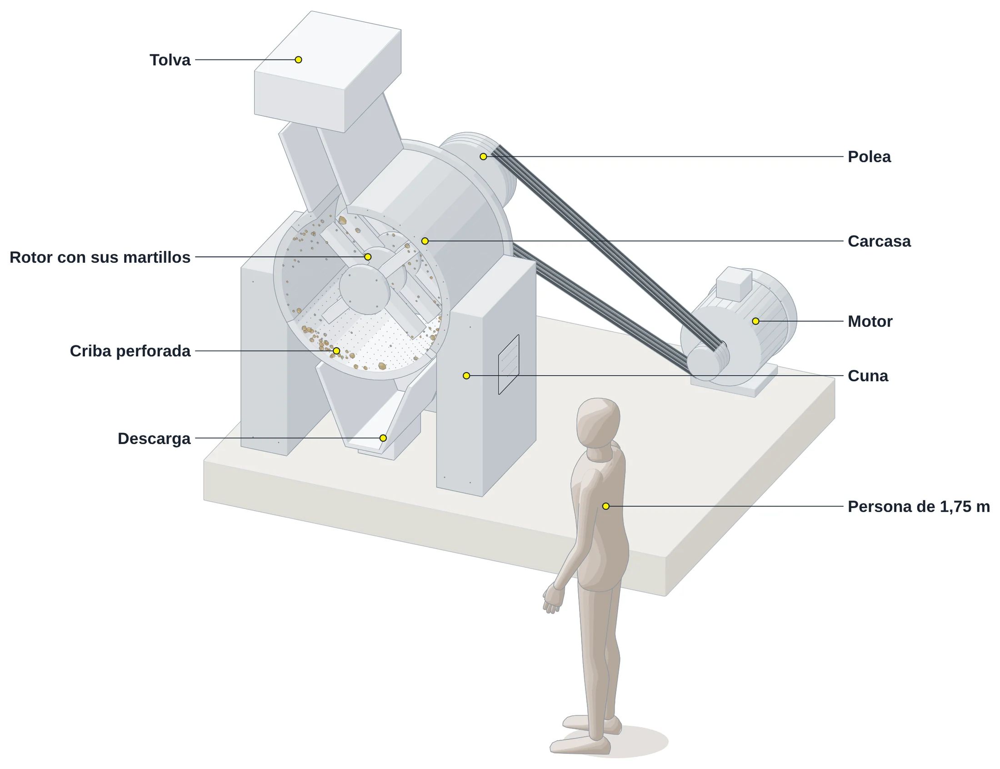
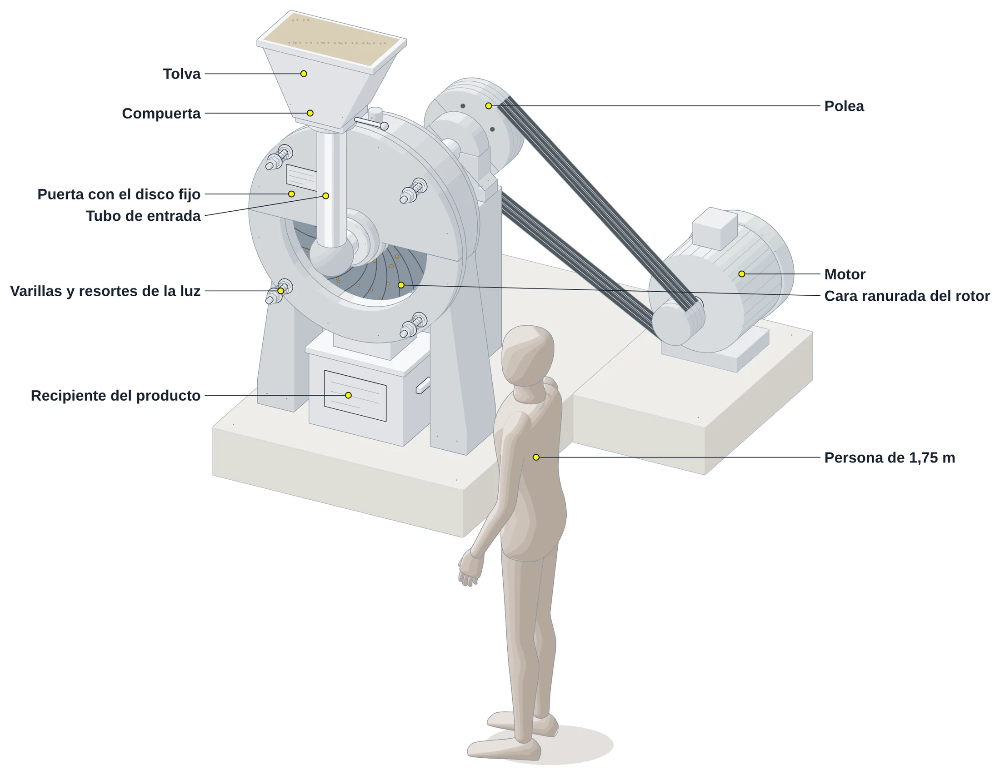
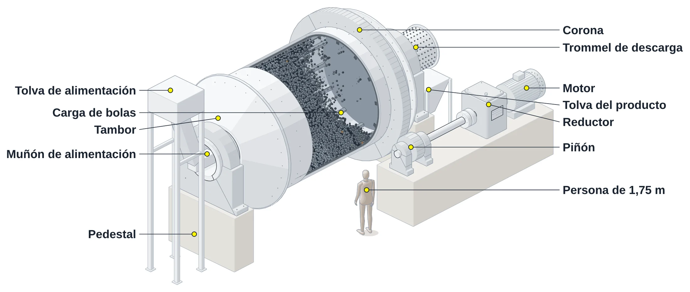

Proyecto de Operaciones Unitarias · Sesión 05
Reducción de tamaño
Cómo se rompe un sólido, cuánta energía pide, qué máquina lo hace y por qué la cáscara húmeda se corta.
La planta del carbonato
El carbonato de calcio de uso alimentario, el E170, pide un polvo con un de 65 µm. La planta del capítulo 7 lo hace con 5 t/h de caliza en tres etapas.
Cómo se rompe un sólido
Los cuatro mecanismos, a dónde va la energía de un molino y las leyes que la calculan.
Cuatro mecanismos de rotura
A dónde va la energía
Un sólido real se rompe por sus defectos. La partícula absorbe energía de deformación hasta que falla su defecto más débil, y al romperse la suelta casi toda como calor: lo que queda es una grieta nueva.
La máquina le entrega al material entre 25 y 60 % de lo que toma del motor, y la superficie nueva guarda más o menos una milésima. El desperdicio está en la física de la fractura: una máquina perfecta seguiría calentando el producto.
Por eso Bond ató la energía útil a la longitud de las grietas nuevas.
Rittinger, Kick y Bond
Las tres leyes salen de una sola ecuación, : con , Rittinger; con , Kick, y con , Bond. La de Bond, con y en micrómetros y en kilovatios hora por tonelada corta, es
El índice de trabajo es la energía para llevar una tonelada corta, de 907,18 kg, de un tamaño infinito a 80 % por 100 µm. Para la caliza vale 11,61, que son 12,80 kWh por tonelada métrica.
Cada ley vale en su intervalo: Kick por encima de un centímetro, Bond en el de los molinos de barras y de bolas, Rittinger en la molienda fina.
El índice de trabajo y sus correcciones
El índice sale del ensayo de molturabilidad de Bond: un molino de 12 × 12 pulgadas que gira a 70 r/min con 285 bolas, que muele en ciclos hasta que la carga circulante llega al equilibrio en 250 %.
Varía mucho entre materiales y dentro de cada uno. La tabla de Bond tiene 82 materiales y 2088 ensayos; su promedio es 13,81, y la caliza da 11,61 en 119 ensayos. Para un diseño, el índice se mide con la piedra de la cantera.
Los alimentos tienen pocos índices publicados: la pimienta negra ha dado uno aparente de 86 a 312, de siete a veinticinco veces el de la caliza.
| Corrección de Bond | Factor |
|---|---|
| Molienda en seco | × 1,30 |
| Circuito abierto, si se controla el 80 % | × 1,20 |
| Diámetro del molino, en pies | |
| Finura, con menor que 70 µm |
Multiplican la de la ley de Bond. El capítulo 7 del libro trae las seis, con la alimentación gruesa y la razón de reducción pequeña.
La energía de las tres etapas
| Etapa | kWh/t | kW con 5 t/h |
|---|---|---|
| Mandíbulas, a 40 mm | 0,354 | 1,77 |
| Martillos, a 3 mm | 1,70 | 8,48 |
| Bolas, a 34,9 µm | 29,6 | 148 |
El molino de bolas lleva tres correcciones: en seco, × 1,30; por finura, × 1,131, y por diámetro, × 1,040. La etapa fina se lleva el 94 % de la energía.
Cada vez que el tamaño se divide entre cuatro, la energía de Bond se duplica, y casi todo el trabajo se gasta en el último tramo.
Las máquinas
Cada máquina con su mecanismo, el intervalo de tamaños que trabaja y los materiales que muele bien.
Razón de reducción
Las máquinas se ordenan por lo que entregan: las trituradoras primarias, de 150 a 250 mm; las secundarias, unos 6 mm; los molinos finos, casi todo por la malla 200, de 74 µm.
Bond puso la frontera entre triturar y moler en un cuarto de pulgada, 6,35 mm.
En el caso, las razones son 5 en la trituradora, 13,3 en el molino de martillos y 86 en el de bolas: 5730 en total, el producto de las tres. Las razones grandes se logran en etapas.
Trituradora de mandíbulas

- Dos mandíbulas en V, una fija y otra que mueve una excéntrica. La de un solo toggle se prefiere para rocas no más duras que la caliza.
- Lo que sale lo fija la abertura del lado abierto: en el caso, 46 mm para un producto de 40 mm.
- No se encuentra normalmente en la industria de alimentos.
Molino de rodillos

- La partícula se aprieta en la luz entre dos rodillos que giran el uno hacia el otro; los lisos dan productos de 1 a 12 mm.
- Un rodillo va sobre resortes, para que se abra si entra algo que no se rompe.
- Los estriados, o los que giran a velocidades distintas, también cizallan: muelen el trigo.
Molino de martillos

- Un rotor rápido golpea las partículas contra la carcasa hasta que pasan por la criba. Muele casi cualquier cosa, también fibrosos tenaces y pastas húmedas.
- La criba controla los gruesos; los finos dependen sobre todo de la velocidad de los martillos.
- Su energía no se estima con confianza desde la teoría: se toma de ensayos con el material real.
Molino de discos

- Un disco ranurado gira frente a otro fijo: el material entra por el ojo y sale molido por la periferia, entre las dos caras.
- Son los sucesores de las piedras de molino: trigo, maíz, cacao, especias y nueces tostadas.
- Gastan de 8 a 80 kWh por tonelada de producto, mucho más que las anteriores.
Intervalos de las máquinas
| Máquina | Mecanismo | Alimentación | Producto | Razón de reducción |
|---|---|---|---|---|
| Trituradora de mandíbulas | Compresión | Hasta 1,5 m | 10 a 20 cm (primaria) | 3 a 4 |
| Trituradora giratoria | Compresión | Hasta cerca de 1,4 m | 10 a 15 cm (primaria) | 3 a 5 |
| Rodillos lisos | Compresión | 12 a 75 mm | 1 a 12 mm | Hasta unos 4 |
| Molino de martillos | Impacto | 25 mm a 75 µm | ||
| Molino de bolas | Impacto y frotación | Hasta 15 mm | Hasta unos 15 µm en seco | 20 a 200 |
| Molino de discos | Frotación y cizalla | Hasta 12 mm | Casi todo por 74 µm | |
| Cortadora de cuchillas | Corte | Piezas tenaces o fibrosas | 2 a 10 mm | La fija la criba |
| Molino de chorro | Choque entre partículas | Mejor por debajo de 150 µm | 0,5 a 10 µm |
Intervalos típicos, de la tabla del capítulo 7 del libro. Las fuentes no siempre coinciden, y lo que no dan queda en blanco.
La máquina se escoge por los tamaños de entrada y de salida, la dureza y la abrasividad, la estructura, la humedad y la sensibilidad al calor. Y se muele tan fino como haga falta, no tan fino como se pueda.
El molino de bolas

Cascada y catarata
La bola de afuera sube pegada al revestimiento y se suelta cuando la componente de su peso hacia el centro iguala la fuerza centrípeta:
Si el molino gira despacio, las bolas ruedan sobre la carga, en cascada. Más rápido, vuelan y caen sobre el pie de la carga, en catarata, donde se hace la mayor parte de la molienda.
Por encima de unos 92 % la bola golpea el revestimiento sin pasar por la carga: gasta acero sin moler.
El circuito cerrado
Un molino solo tiene que moler hasta que la partícula más lenta en romperse llegue al tamaño del producto, y mientras tanto sigue moliendo lo que ya estaba fino. El clasificador deja salir lo fino y devuelve solo lo grueso.
En el caso, el clasificador corta en 32 µm con una carga circulante de 250 %. En circuito abierto, el mismo molino cumple la especificación solo con 2,66 t/h, gasta 1,88 veces la energía por tonelada y deja 42 % de las partículas por debajo de 10 µm, contra 16 %.
Una carga circulante que sube sin que nadie haya tocado el clasificador avisa que el molino pierde capacidad: se gastaron las bolas o cambió la piedra.
Lo que el molino le deja al producto
295 g de acero por tonelada
Las bolas y el revestimiento se gastan, y el acero que pierden queda en el carbonato: unos 300 mg por kilogramo. Si el comprador no lo admite, se saca con separadores magnéticos o no se pone: un molino de cantos rodados de sílice hace el mismo trabajo con dos veces y media el volumen.
120 K si se quedara
Los 29,6 kWh/t del molino son 106 kJ/kg, que calentarían el carbonato unos 120 K. El aire del clasificador se lleva la mayor parte. Para la caliza es un costo de ventilación; para un alimento, un polímero o un fármaco puede ser el límite de la operación.
El calor se saca con camisas de agua helada o de salmuera, con aire refrigerado o con hielo seco. Un separador magnético protege los molinos de martillos y de discos del hierro que llega con la alimentación.
Alimentos, fibras y la cáscara
Lo que no se rompe como una roca: se corta, se desgarra o se muele en frío.
Cortar
Cortar es reducir el tamaño con un filo que cizalla, y lo que se pide es una forma: la tajada, la tira, el cubo. Las leyes de la energía no sirven para diseñar una cortadora; deciden el filo, la forma y lo que el corte le hace al alimento.
- Rebanadoras, hasta 2000 tajadas por minuto.
- Cortadoras de cubos, con cortes en tres planos.
- Desmenuzadoras, como un molino de martillos con cuchillas.
- Despulpadoras, que empujan la pulpa por una malla.
La superficie nueva es tejido roto, y por eso cortar no conserva nada: junta las enzimas con sus sustratos, expone las grasas al oxígeno y les da sustrato a los microorganismos.
Tres cortes, una forma
Una planta de verduras congeladas corta 2 t/h de zanahoria en cubos de 10 mm: salen 534 cubos por segundo.
Los tres cortes multiplican por cuatro el área expuesta, hasta = 0,58 m²/kg. Un kilogramo del carbonato del caso expone 101 m²/kg, unas 174 veces más.
Cortar deja poca superficie nueva, porque busca una forma. Pero esa poca superficie es tejido roto, y por eso los cubos van enseguida al escaldador.
La pimienta y el calor
Murthy y Bhattacharya molieron pimienta negra en un molino de pines piloto, a temperatura ambiente y con nitrógeno líquido. A temperatura ambiente el polvo salió a 53 °C con 35 kg/h y a 86 °C con 15 kg/h.
La molienda caliente perdió cerca de la mitad del aceite volátil, sobre todo los monoterpenos, los más volátiles: el limoneno salió unas cuatro veces más bajo. El frío no hizo el polvo más fino.
Las mejores condiciones fueron un caudal alto y un frío moderado: de 47 a 57 kg/h con el producto entre −15 y −20 °C, que gasta menos nitrógeno.
| Pimienta molida | Aceite volátil (mL por 100 g) | Monoterpenos (mL por 100 g) |
|---|---|---|
| A temperatura ambiente | 0,9 | 0,15 |
| En frío, con nitrógeno | 1,7 | 0,80 |
Datos de Murthy y Bhattacharya, según el capítulo 7 del libro.
El aceite esencial de los cítricos es casi todo limoneno, un monoterpeno volátil (capítulo 1). Un molino que calienta la cáscara puede hacerle perder aceite antes del extractor.
Los materiales fibrosos
Los fibrosos no ceden fácilmente a la compresión ni al impacto: se desgarran o se cortan. La paja de trigo con 8,3 % de humedad pidió 11,4 kWh/t con la criba de 3,2 mm, 37,0 con la de 1,6 mm y 51,6 con la de 0,8 mm.
Con esos datos ninguna ley da una constante: el índice de Bond aparente pasa de unos 40 a más de 100 kWh/t.
El dato de diseño es la energía medida con la criba y la humedad de la planta. Y la criba no es el tamaño del producto: con la de 3,2 mm, la paja salió con 0,64 mm, porque las fibras pasan a lo largo.
La cáscara de naranja
30 a 40 % de la fruta
Eso pesa la cáscara en la naranja, y los desechos de fruta como ella llevan de 70 a 90 % de humedad. Para hacerlos polvo se secan por debajo de 10 %, se muelen y se tamizan.
Se corta
Húmeda, la cáscara se comporta como un tejido, y se corta en molinos de cuchillas: en un molino de laboratorio a 3000 r/min, cuatro toronjas enteras se homogeneizan en 20 segundos.
Rotor, cuchillas y criba
Un rotor de 200 a 900 r/min con 2 a 12 cuchillas pasa muy cerca de 1 a 7 cuchillas fijas, y cada pieza se corta hasta que cabe por una criba de 5 a 8 mm.
La ley de Bond no sirve para la cáscara húmeda, que no se rompe como una roca. Como con la paja, su reducción se diseña con la energía medida en la cortadora, con la criba y la humedad de la planta.
La cáscara de su planta
Qué máquina escoge, qué tamaño busca y con qué dato la diseña.
Antes de escoger la máquina
Lo que sigue
Taller 2
El tamizado de una arena y el de dos molinos para maíz, en Colab, con los datos de su pareja.
Bitácora 1
La materia prima, el diagrama de bloques y cómo se preparan los sólidos de su planta.
El arrastre
El tamaño de la cáscara y el tiempo que tarda el vapor en sacarle el aceite.
Laboratorio 1
El Clevenger con cáscara de naranja, con dos tamaños de cáscara para comparar.
El Explorador de molienda y tamizado del curso tiene las cinco máquinas de esta presentación por dentro, con la carga en movimiento, y el tamizado de su producto.
IQYA-2031 · Sesión 05
Próxima sesión
Nos vemos el jueves 11 de febrero en el Taller 2. La pareja trabaja en Colab, y al final cada uno responde en papel su boleto de salida.
Figuras: capítulo 7 del libro de operaciones unitarias del curso. Grabados, vía Wikimedia Commons: «Citrus, Citronier» y «Citrus aurantium», New York Public Library, dominio público; «Un boticario y un alambique primitivo» y «Rama de cítrico con dos frutos», Wellcome Collection, CC BY 4.0; «Citrus madurensis», Francisco Manuel Blanco, dominio público.